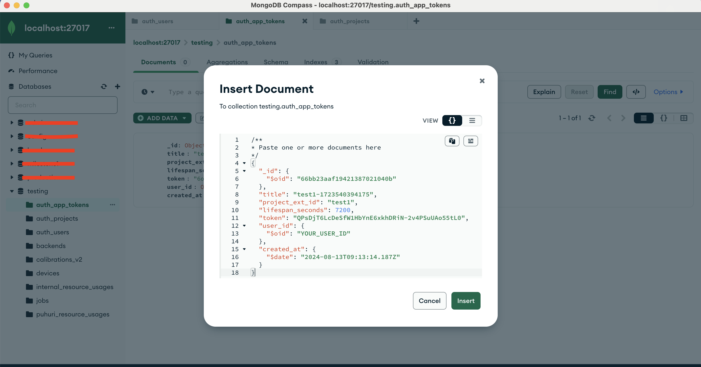
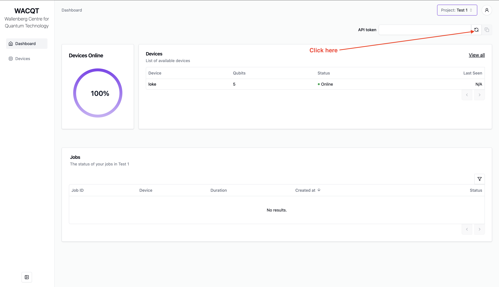

Adding authentication
As a continuation of the quick start tutorial, we can enable authentication and authorization.
Let’s do that now.
Prerequisites
- You must start from the quick start tutorial.
Setup the Backend
Start with the quick start tutorial’s ‘Setup the Backend’ section.
Stop the backend by pressing “Ctrl-C” on your keyboard.
Open the
.envfile with visual studio code (or any other text editor).
code .env- Update
.envfile to have the following content
# .env
APP_SETTINGS=development
IS_AUTH_ENABLED=True
MSS_APP_TOKEN="QPsDjT6LcDeSfW1HbYnE6xkhDRiN-2v4PSuUAo55tL0"
DEFAULT_PREFIX=loke
STORAGE_ROOT=/tmp
LOGFILE_DOWNLOAD_POOL_DIRNAME=logfile_download_pool
LOGFILE_UPLOAD_POOL_DIRNAME=logfile_upload_pool
JOB_UPLOAD_POOL_DIRNAME=job_upload_pool
JOB_PRE_PROC_POOL_DIRNAME=job_preproc_pool
JOB_EXECUTION_POOL_DIRNAME=job_execution_pool
# Main Service Server
MSS_MACHINE_ROOT_URL=http://localhost:8002
MSS_PORT=8002
# Backend Control computer
BCC_MACHINE_ROOT_URL=http://localhost:8000
BCC_PORT=8000
EXECUTOR_CONFIG_FILE=executor-config.yml- Run the start script
./start_bcc.sh --device configs/device_default.toml- Open your browser at http://localhost:8000/docs to see the interactive API docs
Setup the Frontend
Start with the quick start tutorial’s ‘Setup the Frontend’ section.
Stop the frontend.
docker compose -f fresh-docker-compose.yml downCreate a new Github Oauth2 application via the official instructions, with Homepage URL: “http://127.0.0.1:8002” and Authorization callback URL: “http://127.0.0.1:8002/”.
Copy the client ID and the client secret of the Github Oauth2 application.
Open the
mss-config.tomlfile in thetergite-frontendfolder with visual studio code (or any other text editor).
code mss-config.toml- Update the
mss-config.tomlwith the following content
# mss-config.toml
# general configurations
[general]
# the port on which MSS is running
mss_port = 8002
# the port on which the websocket is running
ws_port = 6532
# environment reflect which environment the app is to run in.
environment = "development"
# the host the uvicorn runs on.
# During testing auth on 127.0.0.1, set this to "127.0.0.1". default: "0.0.0.0"
mss_host = "127.0.0.1"
[database]
# configurations for the database
name = "testing"
# database URI
# host.docker.internal resolves to the host's 127.0.0.1
# see https://stackoverflow.com/questions/31324981/how-to-access-host-port-from-docker-container#answer-43541732
url = "mongodb://host.docker.internal:27017"
[[backends]]
name = "loke"
# the URL where this backend is running
# host.docker.internal resolves to the host's 127.0.0.1
# see https://stackoverflow.com/questions/31324981/how-to-access-host-port-from-docker-container#answer-43541732
url = "http://host.docker.internal:8000"
[auth]
# turn auth OFF or ON, default=true
is_enabled = true
jwt_secret = "f236ffd1332dc9e38effd8fff582a69e56d72d7dae9a377f1fda5e0ebedeaa42"
jwt_ttl = 3600
cookie_domain = "127.0.0.1"
cookie_name = "tergiteauth"
[[auth.clients]]
name = "github"
client_id = "the-client-id-copied-from-github"
client_secret = "the-client-secret-copied-from-github"
redirect_url = "http://127.0.0.1:8002/auth/app/github/callback"
client_type = "github"
email_regex = "^(john\\.doe|jane|your-gmail-username)@gmail\\.com$"
email_domain = "gmail.com"
roles = ["admin", "user"]
# Puhuri synchronization
# Puhuri is a resource management platform for HPC systems, that is also to be used for Quantum Computer's
[puhuri]
# turn puhuri synchronization OFF or ON, default=true
is_enabled = false**Make sure you replace the
your-gmail-username,the-client-id-copied-from-github, andthe-client-secret-copied-from-githubplaceholders with the right values.Delete the old docker images of “tergite/tergite-mss”, “tergite/tergite-dashboard” from docker if they exist.
docker rmi tergite/tergite-mss:v0.0.1
docker rmi tergite/tergite-dashboard:v0.0.1- To Run the services, use the
fresh-docker-compose.yml.
docker compose -f fresh-docker-compose.yml up -d- Open your browser at http://127.0.0.1:3000 to see the dashboard and attempt to login with github.

- After successful login, open the Mongo compass application and connect to the default local mongo database

Open the “auth_users” collection in the “testing” database in your mongo compass
Note down the “_id” of the document that contains your details. Let us call it
YOUR_USER_IDfor now.Double-click the “roles” field on the document containing your user details in the “auth_users” collection.
Click the
+button on the left side of the “roles” field and then click “Add item to roles” in the popup that appears.

- Type in “system” in the new empty value that appears under roles

Click on “ADD DATA” then “Insert document” in your “auth_app_tokens” collection in the “testing” database in your mongo compass
Copy and paste the following document into the window that opens, replacing everything that was already there.
{
"_id": {
"$oid": "66bb23aaf19421387021040b"
},
"title": "test1-1723540394175",
"project_ext_id": "test1",
"lifespan_seconds": 720000000,
"token": "QPsDjT6LcDeSfW1HbYnE6xkhDRiN-2v4PSuUAo55tL0",
"user_id": {
"$oid": "YOUR_USER_ID"
},
"created_at": {
"$date": "CURRENT_TIMESTAMP"
}
}Make sure to replace the YOUR_USER_ID place holder with the actual string value from your database.
Make sure to replace the CURRENT_TIMESTAMP place holder with ’ ’
- Click “Insert” to insert the document into the “auth_app_tokens” collection.

Click on “ADD DATA” then “Insert document” in your “auth_projects” collection in the “testing” database in your mongo compass
Copy and paste the following document into the window that opens, replacing everything that was already there.
{
"_id": {
"$oid": "66ba1b56f073eac3b195814c"
},
"version": 2,
"name": "Test 1",
"ext_id": "test1",
"admin_id": "YOUR_USER_ID",
"user_ids": [ "YOUR_USER_ID"],
"qpu_seconds": 54000,
"is_active": true,
"description": "This is a test project by the International Group of Other Testers",
"created_at": "2024-06-20T09:12:00.733Z",
"updated_at": "2024-06-20T09:12:00.733Z"
}Make sure to replace the YOUR_USER_ID place holder with the actual string value from your database.
- Click “Insert” to insert the document into the “auth_projects” collection.

Open the dashboard at http://127.0.0.1:3000
Select project “Test 1” in the top bar.

- Generate a new api token and copy it to the clipboard. Let’s call it
THE_API_TOKEN_YOU_CREATEDfor the sake of this tutorial.

Run an Experiment
Start with the quick start tutorial’s ‘Run an Experiment’ section.
Open the
main.pyfile with visual studio code (or any other text editor).
code main.py- Update the
main.pyfile with the following content:
# main.py
"""A sample script doing a very simple quantum operation"""
import time
import qiskit.circuit as circuit
import qiskit.compiler as compiler
from tergite.qiskit.providers import Job, Tergite
from tergite.qiskit.providers.provider_account import ProviderAccount
if __name__ == "__main__":
# the Tergite API URL
API_URL = "http://localhost:8002"
# The name of the Quantum Computer to use from the available quantum computers
BACKEND_NAME = "loke"
# the application token for logging in
API_TOKEN = "THE_API_TOKEN_YOU_CREATED"
# the name of this service. For your own bookkeeping.
SERVICE_NAME = "local"
# the timeout in seconds for how long to keep checking for results
POLL_TIMEOUT = 100
# create the Qiskit circuit
qc = circuit.QuantumCircuit(1)
qc.x(0)
qc.h(0)
qc.measure_all()
# create a provider
# provider account creation can be skipped in case you already saved
# your provider account to the `~/.qiskit/tergiterc` file.
# See below how that is done.
account = ProviderAccount(service_name=SERVICE_NAME, url=API_URL, token=API_TOKEN)
provider = Tergite.use_provider_account(account)
# to save this account to the `~/.qiskit/tergiterc` file, add the `save=True`
# provider = Tergite.use_provider_account(account, save=True)
# Get the tergite backend in case you skipped provider account creation
# provider = Tergite.get_provider(service_name=SERVICE_NAME)
backend = provider.get_backend(BACKEND_NAME)
backend.set_options(shots=1024)
# compile the circuit
tc = compiler.transpile(qc, backend=backend)
# run the circuit
job: Job = backend.run(tc, meas_level=2, meas_return="single")
# view the results
elapsed_time = 0
result = None
while result is None:
if elapsed_time > POLL_TIMEOUT:
raise TimeoutError(
f"result polling timeout {POLL_TIMEOUT} seconds exceeded"
)
time.sleep(1)
elapsed_time += 1
result = job.result()
print(result.get_counts())Make sure you replace the THE_API_TOKEN_YOU_CREATED placeholder with the right API token.
- Execute the above script by running the commnad below.
python main.py- It should return something like:
Results OK
{'0': 1024}Note: We get only 0’s because we are using the dummy cluster from quantify scheduler